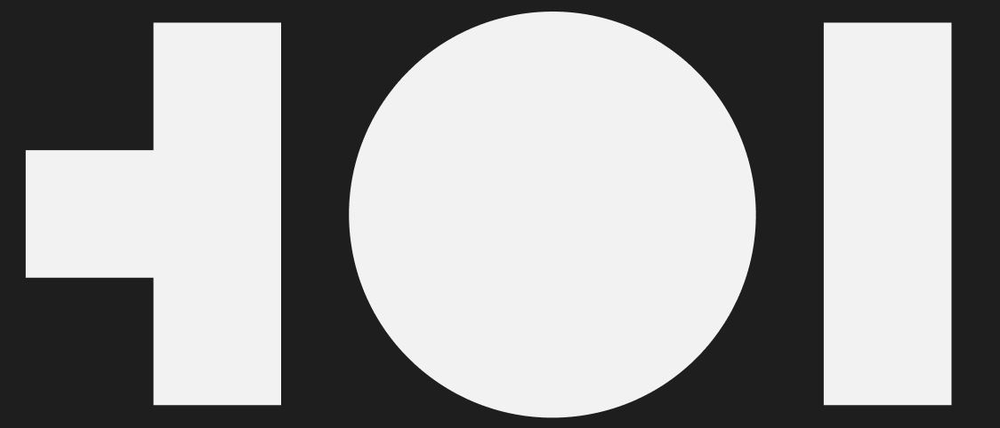
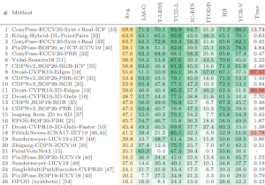

Yann Labbé
I am interested in multimodal foundation models, robotics and AI agents. I was one of the founding researcher of H Company, a research scientist at Meta Reality Labs and an intern in NVIDIA's Seattle Robotics Lab. I obtained a PhD from École Normale Supérieure where I was supervised by Josef Sivic.
Publications
Representative publications are highlighted. Also see Google Scholar for an up-to-date list of publications.

Surfer-H Meets Holo1: Cost-Efficient Web Agent Powered by Open Weights
Mathieu Andreux, Breno Baldas Skuk, Hamza Benchekroun, Emilien Biré, Antoine Bonnet, Riaz Bordie, Nathan Bout, Matthias Brunel, Pierre-Louis Cedoz, Antoine Chassang, Mickaël Chen, Alexandra D. Constantinou, Antoine d'Andigné, Hubert de La Jonquière, Aurélien Delfosse, Ludovic Denoyer, Alexis Deprez, Augustin Derupti, Michael Eickenberg, Mathïs Federico, Charles Kantor, Xavier Koegler, Yann Labbé, Matthew C. H. Lee, Erwan Le Jumeau de Kergaradec, Amir Mahla, Avshalom Manevich, Adrien Maret, Charles Masson, Rafaël Maurin, Arturo Mena, Philippe Modard, Axel Moyal, Axel Nguyen Kerbel, Julien Revelle, Mats L. Richter, María Santos, Laurent Sifre, Maxime Theillard, Marc Thibault, Louis Thiry, Léo Tronchon, Nicolas Usunier, Tony Wu
arXiv 2025
Mathieu Andreux, Breno Baldas Skuk, Hamza Benchekroun, Emilien Biré, Antoine Bonnet, Riaz Bordie, Nathan Bout, Matthias Brunel, Pierre-Louis Cedoz, Antoine Chassang, Mickaël Chen, Alexandra D. Constantinou, Antoine d'Andigné, Hubert de La Jonquière, Aurélien Delfosse, Ludovic Denoyer, Alexis Deprez, Augustin Derupti, Michael Eickenberg, Mathïs Federico, Charles Kantor, Xavier Koegler, Yann Labbé, Matthew C. H. Lee, Erwan Le Jumeau de Kergaradec, Amir Mahla, Avshalom Manevich, Adrien Maret, Charles Masson, Rafaël Maurin, Arturo Mena, Philippe Modard, Axel Moyal, Axel Nguyen Kerbel, Julien Revelle, Mats L. Richter, María Santos, Laurent Sifre, Maxime Theillard, Marc Thibault, Louis Thiry, Léo Tronchon, Nicolas Usunier, Tony Wu
arXiv 2025
6D Object Pose Tracking in Internet Videos for Robotic Manipulation
Georgy Ponimatkin, Martin Cífka, Tomas Soucek, Médéric Fourmy, Yann Labbé, Vladimir Petrik, Josef Sivic
ICLR 2025
Georgy Ponimatkin, Martin Cífka, Tomas Soucek, Médéric Fourmy, Yann Labbé, Vladimir Petrik, Josef Sivic
ICLR 2025
FoundPose: Unseen Object Pose Estimation with Foundation Features
Evin Pınar Örnek, Yann Labbé, Bugra Tekin, Lingni Ma, Cem Keskin, Christian Forster, Tomas Hodan
ECCV 2024
Evin Pınar Örnek, Yann Labbé, Bugra Tekin, Lingni Ma, Cem Keskin, Christian Forster, Tomas Hodan
ECCV 2024
FocalPose++: Focal Length and Object Pose Estimation via Render and Compare
Martin Cífka, Georgy Ponimatkin, Yann Labbé, Bryan Russell, Mathieu Aubry, Vladimir Petrik, Josef Sivic
TPAMI 2024
Martin Cífka, Georgy Ponimatkin, Yann Labbé, Bryan Russell, Mathieu Aubry, Vladimir Petrik, Josef Sivic
TPAMI 2024
MegaPose: 6D Pose Estimation of Novel Objects via Render & Compare
Yann Labbé, Lucas Manuelli, Arsalan Mousavian, Stephen Tyree, Stan Birchfield, Jonathan Tremblay, Justin Carpentier, Mathieu Aubry, Dieter Fox, Josef Sivic
CoRL 2022
Yann Labbé, Lucas Manuelli, Arsalan Mousavian, Stephen Tyree, Stan Birchfield, Jonathan Tremblay, Justin Carpentier, Mathieu Aubry, Dieter Fox, Josef Sivic
CoRL 2022

Focal Length and Object Pose Estimation via Render and Compare
Georgy Ponimatkin, Yann Labbé, Bryan Russel, Mathieu Aubry, Josef Sivic
CVPR 2022
Georgy Ponimatkin, Yann Labbé, Bryan Russel, Mathieu Aubry, Josef Sivic
CVPR 2022
CosySlam: investigating object-level SLAM for detecting locomotion surfaces
César Debeunne, Médéric Fourmy, Yann Labbé, Pierre-Alexandre Léziart, Guilhem Saurel, Joan Solà, Nicolas Mansard
arXiv 2022
César Debeunne, Médéric Fourmy, Yann Labbé, Pierre-Alexandre Léziart, Guilhem Saurel, Joan Solà, Nicolas Mansard
arXiv 2022
Single-view robot pose and joint angle estimation via render & compare
Yann Labbé, Justin Carpentier, Mathieu Aubry, Josef Sivic
CVPR 2021
Yann Labbé, Justin Carpentier, Mathieu Aubry, Josef Sivic
CVPR 2021
Accepted as oral (top 4% submissions).

CosyPose: Consistent multi-view multi-object 6D pose estimation
Yann Labbé, Justin Carpentier, Mathieu Aubry, Josef Sivic
arXiv 2021
Extended version of the ECCV paper
Yann Labbé, Justin Carpentier, Mathieu Aubry, Josef Sivic
arXiv 2021
Extended version of the ECCV paper


CosyPose: Consistent multi-view multi-object 6D pose estimation
Yann Labbé, Justin Carpentier, Mathieu Aubry, Josef Sivic
ECCV 2020
Yann Labbé, Justin Carpentier, Mathieu Aubry, Josef Sivic
ECCV 2020
Winner of the BOP Challenge at ECCV 2020 (5/6 awards).

Monte-Carlo Tree Search for Efficient Visually Guided Rearrangement Planning
Yann Labbé, Sergey Zagoruyko, Igor Kalevatykh, Ivan Laptev, Justin Carpentier, Mathieu Aubry, Josef Sivic
RAL 2020
Yann Labbé, Sergey Zagoruyko, Igor Kalevatykh, Ivan Laptev, Justin Carpentier, Mathieu Aubry, Josef Sivic
RAL 2020